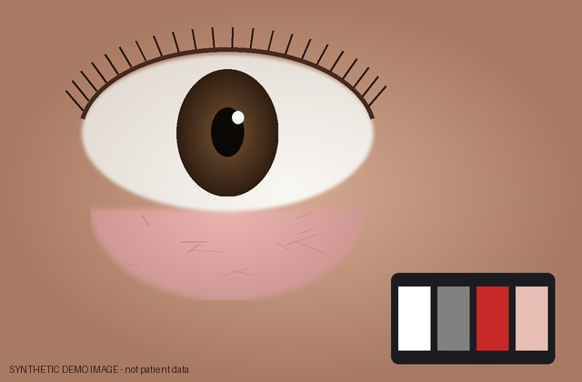
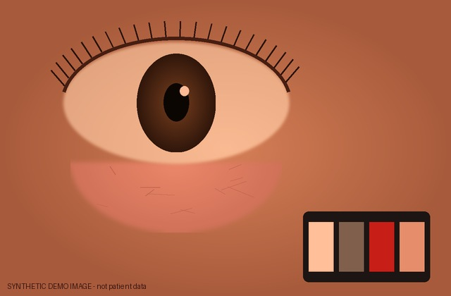
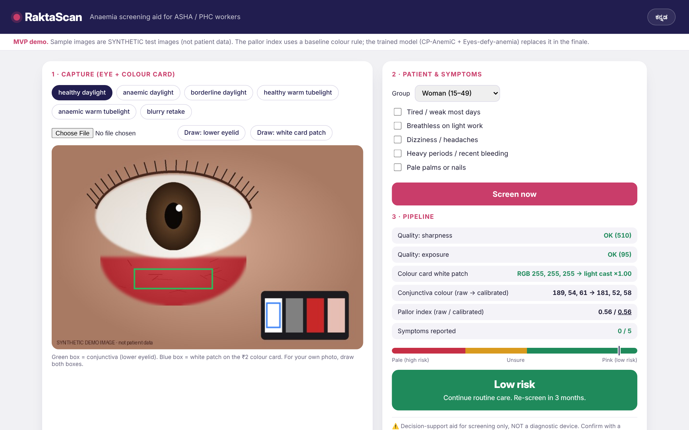
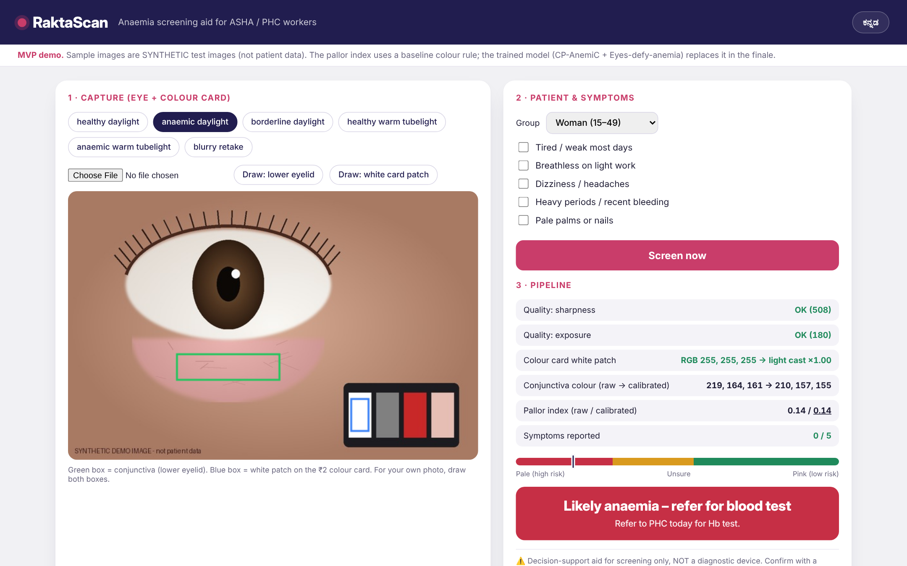
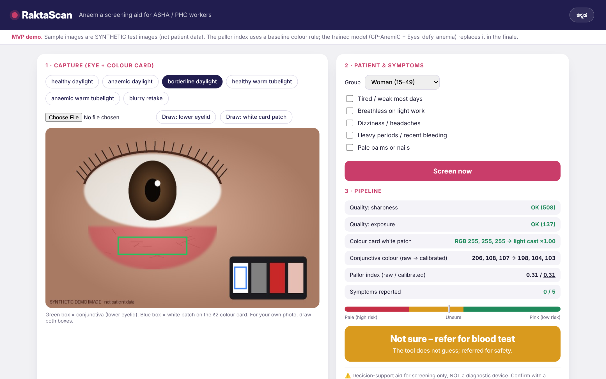
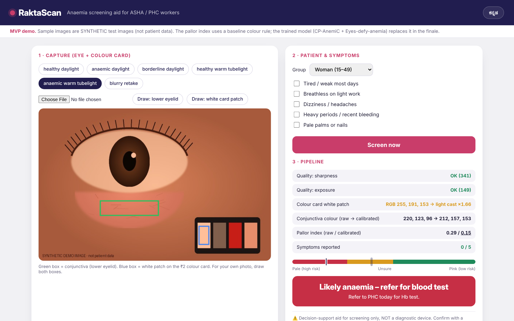
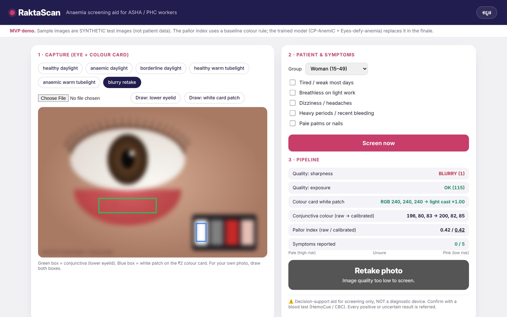
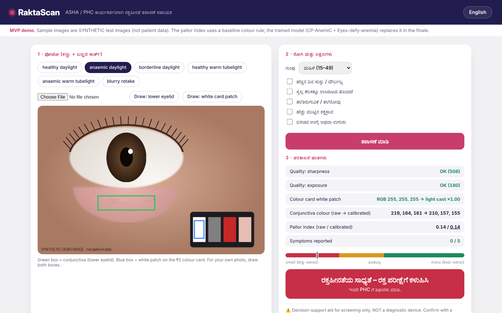

Anaemia is
usually found
too late.

Pale conjunctiva
The lower eyelid is one of the oldest signs of anaemia.
0%
of Indian women aged 15 to 49 are anaemic
0%
of children aged 6 to 59 months
A blood test needs a lab. Many rural PHCs can't spare one for everyone.
Source: NFHS-5 (2019-21), MoHFW
Phones see colour
differently.

Tube-lightReads: borderline?
Same pale eye. A tool that trusts raw colour can wave this patient through.
Introducing
RaktaScan
Anaemia screening on the phone an ASHA worker already carries.
It calibrates for every camera and refers when it isn't sure.
How it works
01
Capture
Lower eyelid photo next to a ₹2 printed colour card.
02
Quality gate
Blurry or dark photo? It asks for a retake.
03
Calibrate
The card's white patch corrects camera and light.
04
Estimate
Pallor score + 5 symptom questions, by age group.
05
Refer if unsure
Borderline cases always go for a blood test.
Runs offline. Kannada, Tulu and English, with voice.
Live MVP
Healthy eye,
daylight
Low risk
Pale eye
Refer for blood test
Borderline.
It won't guess.
Not sure: refer
Pale eye under
tube-light
Pallor index
0.29
0.29 raw → 0.15 after card correction.
Correctly referred.
Blurry photo
Retake photo
ಕನ್ನಡ
with voice
raktascan · MVP






Sample images are synthetic test images, not patient data.
Built for a PHC, not a lab.
Offline
Kannada · Tulu · English
Finale: model trained on CP-AnemiC (710 images) + Eyes-defy-anemia (218), validated Ghana → India.
Screen early.
Refer when unsure.
RaktaScan · Team AAF11 · P A College of Engineering
DevHack 2026 · PS 3.1
Decision-support aid for screening. Not a diagnostic device.